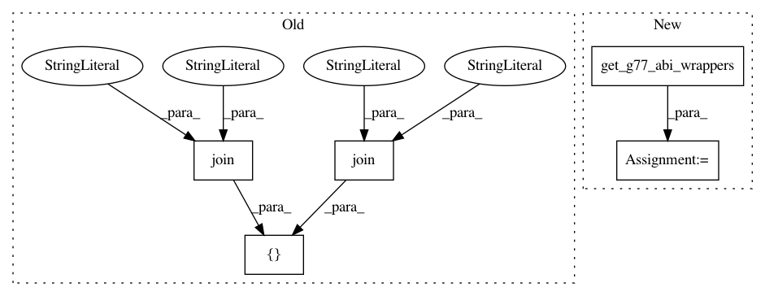

bf1944729ac465ffa7581733bc63ed86a2dfbeb1,scipy/linalg/setup.py,,configuration,#Any#Any#,10
Before Change
config.add_extension("_flapack",
sources=sources,
depends=["flapack_user.pyf.src",
join("src", "flapackwrap_veclib.f"),
join("src", "flapackwrap_dummy.f")],
extra_info=lapack_opt
)
After Change
// flapack:
sources = ["flapack.pyf.src"]
sources += get_g77_abi_wrappers(lapack_opt)
config.add_extension("_flapack",
sources=sources,
depends=["flapack_user.pyf.src"],
In pattern: SUPERPATTERN
Frequency: 3
Non-data size: 5
Instances
Project Name: scipy/scipy
Commit Name: bf1944729ac465ffa7581733bc63ed86a2dfbeb1
Time: 2013-09-14
Author: pav@iki.fi
File Name: scipy/linalg/setup.py
Class Name:
Method Name: configuration
Project Name: scipy/scipy
Commit Name: bf1944729ac465ffa7581733bc63ed86a2dfbeb1
Time: 2013-09-14
Author: pav@iki.fi
File Name: scipy/sparse/linalg/eigen/arpack/setup.py
Class Name:
Method Name: configuration
Project Name: scipy/scipy
Commit Name: bf1944729ac465ffa7581733bc63ed86a2dfbeb1
Time: 2013-09-14
Author: pav@iki.fi
File Name: scipy/sparse/linalg/isolve/setup.py
Class Name:
Method Name: configuration